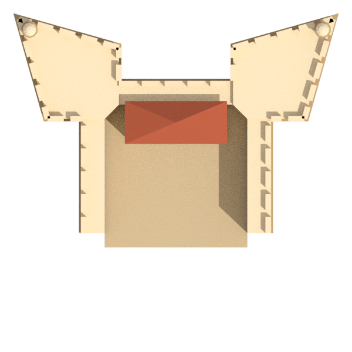

<!doctype html>
<html lang="pt">
<head>
<meta charset="utf-8">
<meta name="viewport" content="width=device-width, initial-scale=1, viewport-fit=cover">
<meta name="theme-color" content="#000000">
<link rel="manifest" href="manifest.webmanifest">
<link rel="icon" href="icon.svg" type="image/svg+xml">
<link rel="apple-touch-icon" href="icon-192.png">
<title>Caçadores da História</title>
<script type="importmap">{"imports":{"three":"./vendor/three.module.min.js"}}</script>
<script type="module" src="ra3d.js"></script>
<style>
/* R7: contraste ≥ 7:1 — preto, branco e amarelo; contornos escuros sobre a câmara.
   R13: tudo em rem, para respeitar o tamanho de letra do sistema. */
:root{
  --bg:#000; --fg:#fff; --amarelo:#FFD400; --amarelo-esc:#7a6500;
  --cinza:#1c1c1c; --linha:#ffffff; --ok:#7CFF9B; --erro:#FF8A8A; --azul:#9CD3FF;
  --alvo:3rem; /* ≥ 48 px */
}
*{box-sizing:border-box}
html{font-size:100%}
html,body{margin:0;height:100%;background:var(--bg);color:var(--fg)}
body{font-family:system-ui,-apple-system,"Segoe UI",Roboto,sans-serif;line-height:1.45;overscroll-behavior:none}
#app{min-height:100%}
.ecra{max-width:40rem;margin:0 auto;padding:1rem 1rem 6rem}
h1{font-size:2rem;line-height:1.1;margin:.5rem 0}
h2{font-size:1.5rem;margin:.5rem 0}
h3{font-size:1.15rem;margin:.75rem 0 .25rem}
p{margin:.5rem 0}
.sub{color:var(--amarelo);font-weight:700}
.nota{font-size:.95rem;color:#ddd}
button,.btn{font:inherit;font-weight:800;min-height:var(--alvo);min-width:var(--alvo);padding:.7rem 1.1rem;border-radius:.8rem;border:3px solid var(--fg);background:var(--bg);color:var(--fg);cursor:pointer;touch-action:manipulation}
button:focus-visible,input:focus-visible{outline:4px solid var(--amarelo);outline-offset:3px}
.prim{background:var(--amarelo);color:#000;border-color:var(--amarelo)}
.larga{width:100%;display:block;margin:.6rem 0}
button:disabled{opacity:.45;cursor:not-allowed}
.linha{display:flex;gap:.6rem;flex-wrap:wrap;align-items:center}
.linha>*{flex:1 1 auto}
.caixa{border:3px solid var(--fg);border-radius:1rem;padding:1rem;margin:1rem 0}
.caixa.amarela{border-color:var(--amarelo)}
label{display:block;font-weight:700;margin:.8rem 0 .3rem}
input[type=text]{font:inherit;width:100%;min-height:var(--alvo);padding:.6rem .8rem;border-radius:.7rem;border:3px solid var(--fg);background:#000;color:#fff}
.escolha{display:grid;grid-template-columns:repeat(auto-fit,minmax(8rem,1fr));gap:.5rem}
.escolha button[aria-pressed=true]{background:var(--amarelo);color:#000;border-color:var(--amarelo)}
.papel{display:inline-block;background:var(--amarelo);color:#000;font-weight:900;border-radius:999px;padding:.2rem .8rem}
.barra-topo{display:flex;justify-content:space-between;align-items:center;gap:.5rem;flex-wrap:wrap;margin-bottom:.5rem}
.pill{border:2px solid var(--fg);border-radius:999px;padding:.2rem .7rem;font-weight:800;white-space:nowrap}

/* ---------- Ecrã 1: procurar com a câmara ---------- */
.cam{position:fixed;inset:0;overflow:hidden;background:#000;touch-action:none;user-select:none}
.cam video{position:absolute;inset:0;width:100%;height:100%;object-fit:cover}
.pano{position:absolute;inset:0;background:
  linear-gradient(#5aa9e6 0 38%, transparent 38%),
  repeating-linear-gradient(90deg,#d8bb84 0 60px,#c9a96f 60px 62px),
  #c9a96f;}
.pano::before{content:"";position:absolute;left:0;right:0;top:30%;height:9%;
  background:repeating-linear-gradient(90deg,#d8bb84 0 34px,transparent 34px 56px);background-position-x:inherit}
.pano::after{content:"";position:absolute;left:0;right:0;bottom:0;height:30%;background:#8a6a43}
.peca-ra{position:absolute;top:42%;width:7rem;height:7rem;margin:-3.5rem 0 0 -3.5rem;display:flex;align-items:center;justify-content:center;
  border-radius:1.2rem;transition:transform .15s;animation:flutua 2.4s ease-in-out infinite;pointer-events:none}
.peca-ra img{width:100%;height:100%;object-fit:contain;filter:drop-shadow(0 0 3px #000) drop-shadow(0 0 2px #000)}
#mundo.tem3d .peca-ra img{opacity:0}
#mundo.tem3d .peca-ra{animation:none;top:50%}
#mundo.tem3d .peca-ra.encontrada{background:transparent}
.peca-ra.encontrada{pointer-events:auto;transform:scale(1.6);background:rgba(0,0,0,.55);outline:5px solid var(--amarelo);outline-offset:4px;cursor:pointer;animation:none}
@keyframes flutua{50%{translate:0 -10px}}
.radar{position:absolute;top:max(1rem,env(safe-area-inset-top));right:1rem;width:6.5rem;height:6.5rem;border-radius:50%;
  background:rgba(0,0,0,.75);border:3px solid #fff}
.radar::before{content:"";position:absolute;left:50%;top:0;bottom:50%;width:0;border-left:2px dashed rgba(255,255,255,.6)}
.radar .eu{position:absolute;left:50%;top:50%;width:.9rem;height:.9rem;margin:-.45rem;border-radius:50%;background:#fff}
.radar .alvo{position:absolute;left:50%;top:50%;width:1.3rem;height:1.3rem;margin:-.65rem;border-radius:50%;background:var(--amarelo);border:3px solid #000}
.dica{position:absolute;left:50%;bottom:calc(7.5rem + env(safe-area-inset-bottom));transform:translateX(-50%);background:rgba(0,0,0,.85);border:3px solid #fff;
  color:#fff;font-weight:900;font-size:1.35rem;padding:.5rem 1rem;border-radius:1rem;white-space:nowrap;text-align:center}
.dica.quente{border-color:var(--amarelo);color:var(--amarelo)}
.info-topo{position:absolute;top:max(1rem,env(safe-area-inset-top));left:1rem;right:8.5rem;display:flex;flex-direction:column;gap:.4rem;align-items:flex-start}
.info-topo .pill{background:rgba(0,0,0,.8)}
.calor{width:10rem;max-width:100%;height:.8rem;border:2px solid #fff;border-radius:999px;background:rgba(0,0,0,.8);overflow:hidden}
.calor i{display:block;height:100%;width:0;background:linear-gradient(90deg,var(--azul),var(--amarelo),#ff5a36)}
.rodar{position:absolute;top:50%;transform:translateY(-50%);font-size:1.6rem;background:rgba(0,0,0,.8)}
.rodar.esq{left:.5rem}.rodar.dir{right:.5rem}
.fundo-cam{position:absolute;left:0;right:0;bottom:0;padding:.6rem .6rem calc(.6rem + env(safe-area-inset-bottom));display:flex;gap:.5rem;background:rgba(0,0,0,.85)}
.fundo-cam button{flex:1;padding:.5rem}
.aviso-cam{position:absolute;left:1rem;right:1rem;top:9rem;background:rgba(0,0,0,.85);border:2px solid #fff;border-radius:.8rem;padding:.5rem .8rem;font-size:.95rem}

/* ---------- Curiosidade / pergunta ---------- */
.peca-grande{position:relative;width:100%;max-width:20rem;height:13rem;margin:.5rem auto;display:flex;justify-content:center}
.peca-grande img{width:13rem;height:100%;object-fit:contain}
.vista3d{position:relative;background:linear-gradient(#5aa9e6,#cfeaff)}
.dica3d{position:absolute;left:.5rem;bottom:.5rem;background:rgba(0,0,0,.8);color:#fff;font-weight:800;font-size:.9rem;padding:.2rem .6rem;border-radius:999px;pointer-events:none}
.legenda{font-size:1.2rem;background:#111;border-left:6px solid var(--amarelo);padding:.8rem 1rem;border-radius:.5rem}
.opcoes{display:grid;gap:.7rem;margin-top:1rem}
.opcoes button{font-size:1.25rem;text-align:left;min-height:4rem}
.opcoes button.certa{background:var(--ok);color:#000;border-color:var(--ok)}
.opcoes button.errada{background:var(--erro);color:#000;border-color:var(--erro)}
.retro{font-size:1.3rem;font-weight:900;margin-top:1rem}

/* ---------- Ecrã 4: montar ---------- */
.tabuleiro{position:relative;width:100%;max-width:34rem;margin:0 auto;aspect-ratio:1;border:3px solid #fff;border-radius:1rem;overflow:hidden;background:#5aa9e6}
.tabuleiro>.fundo{position:absolute;inset:0;width:100%;height:100%}
.slot{position:absolute}
.slot img{width:100%;height:100%;display:block}
.slot.vazio img{opacity:.35;filter:grayscale(1) brightness(.6)}
.slot.vazio{outline:3px dashed var(--amarelo);outline-offset:1px;border-radius:.3rem}
.slot.encaixa{animation:pop .35s}
@keyframes pop{50%{transform:scale(1.12)}}
.mochila{display:grid;grid-template-columns:repeat(auto-fill,minmax(5.5rem,1fr));gap:.6rem;margin-top:1rem}
.mpeca{aspect-ratio:1;border:3px solid #fff;border-radius:.8rem;display:flex;align-items:center;justify-content:center;padding:.4rem;background:#111;touch-action:none;cursor:grab;position:relative}
.mpeca img{width:100%;height:100%;object-fit:contain;pointer-events:none}
.mpeca.bloq{border-style:dashed;color:#bbb;font-size:1.6rem;cursor:default}
.mpeca small{position:absolute;bottom:.1rem;right:.3rem;font-size:.75rem;font-weight:800}
.fantasma{position:fixed;pointer-events:none;z-index:50;opacity:.9;filter:drop-shadow(0 6px 8px rgba(0,0,0,.6))}
.fantasma img{width:100%;height:100%;display:block}

/* ---------- Sem RA ---------- */
.local{display:grid;grid-template-columns:6rem 1fr;gap:.8rem;align-items:center;border:3px solid #fff;border-radius:1rem;padding:.7rem;margin:.7rem 0}
.local .foto{aspect-ratio:1;background:#5aa9e6;border-radius:.6rem;border:2px solid #fff;display:flex;align-items:flex-end;justify-content:center;overflow:hidden}
#pg img{width:100%;height:100%;object-fit:contain}
.local .foto img{width:100%;height:100%;object-fit:contain}

/* ---------- Professora ---------- */
.codigo{font-size:2.6rem;font-weight:900;letter-spacing:.15em;text-align:center;color:var(--amarelo);border:3px dashed var(--amarelo);border-radius:1rem;padding:.6rem}
table{width:100%;border-collapse:collapse;font-size:1rem}
th,td{border:2px solid #fff;padding:.4rem .5rem;text-align:left}
th{background:#222}
textarea{width:100%;min-height:6rem;font:inherit;background:#000;color:#fff;border:3px solid #fff;border-radius:.7rem;padding:.5rem}
.qr{background:#fff;padding:.8rem;border-radius:1rem;width:min(18rem,80vw);margin:1rem auto}
.qr svg{width:100%;height:auto;display:block}
.escala{display:grid;grid-template-columns:repeat(5,1fr);gap:.3rem}
.escala button{padding:.3rem;font-size:1.1rem}
.escala button[aria-pressed=true]{background:var(--amarelo);color:#000;border-color:var(--amarelo)}
.ok{color:var(--ok);font-weight:900}.nok{color:var(--erro);font-weight:900}
.destaque{font-size:1.4rem;font-weight:900;color:var(--amarelo)}

.xr-ov{position:fixed;inset:0;z-index:40;pointer-events:none;color:#fff}
.xr-ov button{pointer-events:auto}
.toast{position:fixed;left:50%;top:1rem;transform:translateX(-50%);z-index:100;background:var(--amarelo);color:#000;font-weight:900;padding:.7rem 1.1rem;border-radius:999px;border:3px solid #000;max-width:90vw;text-align:center}
.def{position:fixed;right:1rem;top:1rem;z-index:5}
@media (prefers-reduced-motion:reduce){*{animation:none!important;transition:none!important}}
</style>
</head>
<body>
<div id="app"></div>
<script src="modelos/tabuleiro.js"></script>
<script src="vendor/qrcode.js"></script>
<script>
"use strict";
/* =====================================================================
   CAÇADORES DA HISTÓRIA — Fortaleza de São Miguel (Luanda)
   Protótipo que segue o dossier de exemplo de IHC (PL 3–8):
   ecrã 1 Procurar (radar + quente/frio) · ecrã 2 Peça encontrada (Fixar)
   ecrã 3 Pergunta (curiosidade em áudio + legenda, 3 respostas)
   ecrã 4 Montar em equipa (tabuleiro 2D, íman, toque para rodar)
   + resumo para a professora (código da turma)
   ===================================================================== */

/* ---------------- Dados do monumento ---------------- */
const MONUMENTO = { nome:"Fortaleza de São Miguel", cidade:"Luanda" };

// az = direcção (graus) em relação ao sítio para onde o jogador estava virado ao começar.
// slot = lugar no tabuleiro (unidades de um tabuleiro 600 × 400).
// O lugar de cada peça no tabuleiro (slot) vem de modelos/tabuleiro.js, gerado a partir das
// renderizações do Blender (ferramentas/). Tabuleiro: planta vista de cima, 600 × 600.
const PECAS = [
  { id:"muralha", nome:"Baluarte da frente", az:25, onde:"No baluarte do lado esquerdo do portão",
    curio:"Vista de cima, a fortaleza tem a forma de uma estrela de quatro pontas: cada ponta é um baluarte. Começou a ser construída em 1576, quando Paulo Dias de Novais fundou Luanda. As primeiras muralhas eram de barro e taipa; mais tarde foram refeitas em pedra e cal.",
    q:"Em que ano começou a ser construída a Fortaleza de São Miguel?",
    o:["1648","1576","1700"], a:1,
    explica:"Foi em 1576, o mesmo ano em que Luanda foi fundada." },
  { id:"portao", nome:"Portão principal", az:95, onde:"Junto ao portão de entrada",
    curio:"A fortaleza fica no alto do Morro de São Miguel. Lá de cima vê-se toda a baía e a Ilha de Luanda, por isso era o lugar ideal para vigiar os navios que chegavam.",
    q:"Porque é que a fortaleza foi construída no alto do morro?",
    o:["Para vigiar a baía e os navios","Para ficar perto do rio Kwanza","Para se esconder dos navios"], a:0,
    explica:"Do alto do morro via-se toda a baía: quem lá estava via os navios muito antes de chegarem." },
  { id:"canhao", nome:"Canhão", az:160, onde:"Em cima do baluarte virado para a baía",
    curio:"As muralhas tinham muitas canhoneiras, aberturas por onde saíam os canhões: em 1846 contaram-se 131. Mesmo assim, entre 1641 e 1648 os holandeses ocuparam Luanda e a fortaleza, a que chamaram Forte Aardenburgh. Em 1648 uma armada vinda do Brasil, comandada por Salvador Correia de Sá, voltou a tomá-la.",
    q:"Que povo ocupou Luanda e a fortaleza entre 1641 e 1648?",
    o:["Os ingleses","Os espanhóis","Os holandeses"], a:2,
    explica:"Foram os holandeses, que ficaram sete anos, até 1648." },
  { id:"azulejos", nome:"Casamata dos azulejos", az:215, onde:"Na casamata dos azulejos (lá dentro)",
    curio:"Numa casamata, uma sala abrigada junto à muralha, as paredes estão cobertas por painéis de azulejos azuis e brancos. Mostram cenas da história de Angola e também animais e plantas da nossa terra.",
    q:"Que decoração cobre as paredes da casamata?",
    o:["Pinturas a óleo","Painéis de azulejos","Tapeçarias"], a:1,
    explica:"São painéis de azulejos azuis e brancos, com cenas da história, animais e plantas de Angola." },
  { id:"baluarte", nome:"Baluarte virado ao mar", az:275, onde:"No baluarte do lado direito, virado para a baía",
    curio:"Durante séculos, a fortaleza esteve ligada ao tráfico de pessoas escravizadas. Da baía de Luanda partiram navios com milhares de angolanos, sobretudo para o Brasil.",
    q:"Para onde ia a maioria das pessoas escravizadas embarcadas em Luanda?",
    o:["Para o Brasil","Para Portugal","Para a Índia"], a:0,
    explica:"A maioria foi levada para o Brasil, do outro lado do Atlântico." },
  { id:"estatua", nome:"Estátua do pátio", az:330, onde:"No pátio, junto às estátuas", roda:false,
    curio:"Hoje a fortaleza é o Museu Nacional de História Militar, inaugurado a 4 de Abril de 2013. No pátio estão estátuas de figuras portuguesas, como Diogo Cão e Vasco da Gama, que foram retiradas das praças de Luanda depois da independência.",
    q:"O que funciona hoje na Fortaleza de São Miguel?",
    o:["Uma escola","Um museu de história militar","Um hospital"], a:1,
    explica:"É o Museu Nacional de História Militar." },
];
const TAB = window.TABULEIRO;  // {w,h,slots:{id:{x,y,w,h}}}
PECAS.forEach(p=>p.slot=TAB.slots[p.id]);
const PONTOS_CERTA = 100;

/* ---------------- Imagens das peças (renderizadas no Blender a partir dos modelos 3D) ---------------- */
// vista "cima": recorte da planta (tabuleiro, mochila); vista "3q": três quartos (fotografias, curiosidade)
function svgPeca(id,vista="3q"){
  const src=vista==="cima"?`modelos/img/${id}_peca.png`:`modelos/img/${id}_3q.png`;
  return ``;
}
const pct=(v,t)=>(v/t*100)+"%";
const posSlot=s=>`left:${pct(s.x,TAB.w)};top:${pct(s.y,TAB.h)};width:${pct(s.w,TAB.w)};height:${pct(s.h,TAB.h)}`;
const SVG_FUNDO = `<svg class="fundo" viewBox="0 0 600 600" preserveAspectRatio="none" aria-hidden="true">
  <rect width="600" height="600" fill="#1f5fa8"/>
  <path d="M0 0 H600 V120 Q450 160 300 140 T0 170 Z" fill="#c9b48c"/>
  <circle cx="300" cy="300" r="292" fill="#8a6a43"/>
  <text x="300" y="590" text-anchor="middle" font-size="20" font-weight="800" fill="#fff" stroke="#000" stroke-width="4" paint-order="stroke">Morro de São Miguel · vista de cima</text></svg>
  `;

/* ---------------- Estado (guardado no aparelho) ---------------- */
// R6: guardamos só alcunhas e pontuação — nunca nome completo nem localização.
const CHAVE="ch-fsm-v2", CHAVE_DEF="ch-def-v1", CHAVE_RES="ch-resultados-v1";
const ler=(k,d)=>{try{const v=JSON.parse(localStorage.getItem(k));return v??d}catch(e){return d}};
const gravar=(k,v)=>{try{localStorage.setItem(k,JSON.stringify(v))}catch(e){}};
let DEF = Object.assign({letra:1,som:true,vib:true,voz:true}, ler(CHAVE_DEF,{}));
let J = ler(CHAVE,null); // jogo em curso
function novoJogo(equipa,turma,modo,familia=false){
  J={equipa,turma,modo,familia,pontos:0,atual:0,inicio:Date.now(),reg:[],
     pecas:Object.fromEntries(PECAS.map(p=>[p.id,{recolhida:false,respondida:false,certa:false,colocada:false,rot:p.roda===false?0:[90,180,270][Math.floor(Math.random()*3)]}]))};
  guardar();
  reg("inicio",{modo,jogadores:equipa.length,familia});
}
const guardar=()=>gravar(CHAVE,J);
/* Registo para os testes de usabilidade (PL 14): só tempos e contagens, sem dados pessoais. */
function reg(tipo,dados={}){if(!J)return;(J.reg=J.reg||[]).push({t:Date.now()-J.inicio,tipo,...dados});guardar()}
const CHAVE_SES="ch-sessoes-v1";
const TURMA_URL=(()=>{try{return (new URLSearchParams(location.search).get("turma")||"").toUpperCase().slice(0,10)}catch(e){return ""}})();
function aplicarDef(){document.documentElement.style.fontSize=(100*DEF.letra)+"%";gravar(CHAVE_DEF,DEF)}
aplicarDef();

/* ---------------- Utilitários ---------------- */
const app=document.getElementById("app");
const esc=s=>String(s).replace(/[&<>"']/g,c=>({"&":"&amp;","<":"&lt;",">":"&gt;",'"':"&quot;","'":"&#39;"}[c]));
const norm=d=>((d%360)+540)%360-180;
const contar=k=>PECAS.filter(p=>J.pecas[p.id][k]).length;
function toast(msg,ms=2200){document.querySelectorAll(".toast").forEach(t=>t.remove());const t=document.createElement("div");t.className="toast";t.setAttribute("role","status");t.textContent=msg;document.body.appendChild(t);setTimeout(()=>t.remove(),ms)}
let actx=null;
function som(tipo){
  if(!DEF.som)return;
  try{actx=actx||new (window.AudioContext||window.webkitAudioContext)();
    const notas={encontrar:[[880,.09],[1320,.12]],certo:[[660,.1],[990,.18]],errado:[[260,.25]],encaixe:[[520,.06],[780,.08]],fim:[[523,.12],[659,.12],[784,.12],[1046,.3]]}[tipo]||[[600,.1]];
    let t=actx.currentTime;
    for(const [f,d] of notas){const o=actx.createOscillator(),g=actx.createGain();o.type="square";o.frequency.value=f;g.gain.setValueAtTime(.15,t);g.gain.exponentialRampToValueAtTime(.001,t+d);o.connect(g).connect(actx.destination);o.start(t);o.stop(t+d);t+=d*.9}
  }catch(e){}
}
const vibrar=p=>{if(DEF.vib&&navigator.vibrate)try{navigator.vibrate(p)}catch(e){}};
function falar(texto,fim){
  pararVoz();
  if(!DEF.voz||!("speechSynthesis" in window)){fim&&fim();return}
  const u=new SpeechSynthesisUtterance(texto);u.lang="pt-PT";u.rate=.95;
  const vozes=speechSynthesis.getVoices();u.voice=vozes.find(v=>/pt[-_]PT/i.test(v.lang))||vozes.find(v=>/^pt/i.test(v.lang))||null;
  u.onend=()=>fim&&fim();u.onerror=()=>fim&&fim();
  speechSynthesis.speak(u);
}
const pararVoz=()=>{try{speechSynthesis.cancel()}catch(e){}};

/* ---------------- Equipa e papéis (R4 / desencontro D3) ---------------- */
const PAPEIS={conta:{n:"Conta",ic:"👴🏾",d:"conta a história aos netos"},aponta:{n:"Aponta",ic:"🎯",d:"procura as peças com a câmara"},responde:{n:"Responde",ic:"💬",d:"ouve a curiosidade e responde"},monta:{n:"Monta",ic:"🧩",d:"encaixa as peças no tabuleiro"}};
function dono(papel){if(J.familia)return papel==="conta"?0:1;const n=J.equipa.length;if(n===1)return 0;if(n===2)return papel==="responde"?1:0;return {aponta:0,responde:1,monta:2}[papel]}
function passar(papel,depois){
  pararVoz();
  const i=dono(papel);
  if(J.equipa.length===1||i===J.atual){J.atual=i;guardar();return depois()}
  const P=PAPEIS[papel];
  app.innerHTML=`<main class="ecra" style="text-align:center;padding-top:3rem">
    <p style="font-size:4rem;margin:0">${P.ic}</p>
    <h1>Passa o telemóvel a<br><span style="color:var(--amarelo)">${esc(J.equipa[i])}</span></h1>
    <p style="font-size:1.2rem">Papel: <span class="papel">${P.n}</span> — ${P.d}.</p>
    <button class="prim larga" id="sou" style="font-size:1.3rem;margin-top:2rem">Sou eu, ${esc(J.equipa[i])} →</button></main>`;
  document.getElementById("sou").onclick=()=>{J.atual=i;guardar();depois()};
}
const etiquetaPapel=papel=>J.equipa.length>1?`<span class="papel">${PAPEIS[papel].ic} ${PAPEIS[papel].n}: ${esc(J.equipa[dono(papel)])}</span>`:"";

/* =====================================================================
   ECRÃS
   ===================================================================== */
function inicio(){
  pararCamara();pararVoz();
  const emCurso=J&&contar("colocada")<PECAS.length;
  app.innerHTML=`<main class="ecra">
    <p class="sub" style="margin-top:1.5rem">${MONUMENTO.nome} · ${MONUMENTO.cidade}</p>
    <h1>Caçadores da História</h1>
    <p style="font-size:1.15rem">Há <b>${PECAS.length} peças</b> da fortaleza escondidas à tua volta. Encontra-as com a câmara, responde às perguntas e reconstrói o monumento!</p>
    ${emCurso?`<button class="prim larga" id="cont">▶ Continuar o jogo (${contar("recolhida")}/${PECAS.length} peças)</button>`:""}
    <button class="${emCurso?"":"prim "}larga" id="novo">🎯 Novo jogo</button>
    <button class="larga" id="prof">👩🏾‍🏫 Sou professor(a)</button>
    <section class="caixa">
      <h3 style="margin-top:0">Definições</h3>
      <div class="linha"><span>Tamanho da letra</span>
        <button id="lm" aria-label="Letra mais pequena">A−</button><button id="lM" aria-label="Letra maior">A+</button></div>
      <div class="linha" style="margin-top:.5rem">
        <button id="tv" aria-pressed="${DEF.voz}">${DEF.voz?"🔊":"🔇"} Voz</button>
        <button id="ts" aria-pressed="${DEF.som}">${DEF.som?"🔔":"🔕"} Sons</button>
        <button id="tb" aria-pressed="${DEF.vib}">📳 Vibração ${DEF.vib?"sim":"não"}</button></div>
      <p class="nota">Todos os sons e a voz têm sempre texto no ecrã.</p>
    </section></main>`;
  const $=id=>document.getElementById(id);
  if(emCurso)$("cont").onclick=retomar;
  $("novo").onclick=configurar;
  $("prof").onclick=professora;
  $("lm").onclick=()=>{DEF.letra=Math.max(.85,+(DEF.letra-.15).toFixed(2));aplicarDef()};
  $("lM").onclick=()=>{DEF.letra=Math.min(1.9,+(DEF.letra+.15).toFixed(2));aplicarDef()};
  $("tv").onclick=()=>{DEF.voz=!DEF.voz;aplicarDef();inicio()};
  $("ts").onclick=()=>{DEF.som=!DEF.som;aplicarDef();inicio()};
  $("tb").onclick=()=>{DEF.vib=!DEF.vib;aplicarDef();inicio()};
}
function retomar(){
  const falta=PECAS.find(p=>J.pecas[p.id].recolhida&&!J.pecas[p.id].respondida);
  if(falta)return passar(J.familia?"conta":"responde",()=>curiosidade(falta));
  if(contar("recolhida")===PECAS.length)return passar("monta",montar);
  passar("aponta",procurar);
}

function configurar(){
  let n=1, modo="ra"; // n: 1, 2, 3 ou "f" (família)
  const desenhar=()=>{
    app.innerHTML=`<main class="ecra">
      <button id="volta">← Voltar</button>
      <h2>Novo jogo</h2>
      <h3>Quantos vão jogar com este telemóvel?</h3>
      <div class="escolha" role="group">${[1,2,3,"f"].map(k=>`<button data-n="${k}" aria-pressed="${n===k}">${k===1?"👤 Sozinho":k===2?"👥 2 colegas":k===3?"👥 3 colegas":"👴🏾 Família"}</button>`).join("")}</div>
      ${n==="f"?`<p class="caixa amarela">Modo família: quem é mais velho <b>conta a história</b> por palavras suas; os netos procuram, respondem e montam. Pode jogar-se sentado.</p>
        <label for="al0">Alcunha de quem conta a história (avô, avó…)</label><input type="text" id="al0" maxlength="16" autocomplete="off" placeholder="Ex.: Vovô Mateus">
        <label for="al1">Alcunha dos netos</label><input type="text" id="al1" maxlength="16" autocomplete="off" placeholder="Ex.: Os Netos">`
      :[...Array(n)].map((_,i)=>`<label for="al${i}">Alcunha ${n>1?`do jogador ${i+1} (${["Aponta","Responde","Monta"][i]}${n===2&&i===0?" e Monta":""})`:""}</label>
        <input type="text" id="al${i}" maxlength="16" autocomplete="off" placeholder="Ex.: ${["Kiki","Tchico","Nany"][i]}">`).join("")}
      <p class="nota">🔒 Só guardamos a alcunha e a pontuação. Não escrevas o teu nome completo.</p>
      <label for="turma">Código da turma (se a professora deu um)</label>
      <input type="text" id="turma" maxlength="10" autocomplete="off" placeholder="Ex.: FSM-4821" style="text-transform:uppercase" value="${esc(TURMA_URL)}">
      <h3>Como queres procurar?</h3>
      <div class="escolha" role="group">
        <button data-m="ra" aria-pressed="${modo==="ra"}">📷 Com a câmara</button>
        <button data-m="semra" aria-pressed="${modo==="semra"}">🖼️ Sem câmara (fotografias)</button></div>
      <p class="nota">Podes jogar <b>sentado</b>: as peças aparecem à tua volta, basta rodar o telemóvel. Sem câmara gasta menos bateria.</p>
      <button class="prim larga" id="comecar" style="margin-top:1rem">Começar →</button></main>`;
    document.getElementById("volta").onclick=inicio;
    document.querySelectorAll("[data-n]").forEach(b=>b.onclick=()=>{guardaCampos();n=b.dataset.n==="f"?"f":+b.dataset.n;desenhar();repoeCampos()});
    document.querySelectorAll("[data-m]").forEach(b=>b.onclick=()=>{guardaCampos();modo=b.dataset.m;desenhar();repoeCampos()});
    document.getElementById("comecar").onclick=async()=>{
      const nomes=[...Array(n==="f"?2:n)].map((_,i)=>document.getElementById("al"+i).value.trim());
      if(nomes.some(x=>!x)){toast("Escreve uma alcunha para cada jogador.");document.getElementById("al"+nomes.findIndex(x=>!x)).focus();return}
      const turma=document.getElementById("turma").value.trim().toUpperCase();
      // iOS: pedir acesso ao giroscópio tem de ser feito dentro do toque
      if(modo==="ra"&&window.DeviceOrientationEvent&&typeof DeviceOrientationEvent.requestPermission==="function"){try{await DeviceOrientationEvent.requestPermission()}catch(e){}}
      try{actx=actx||new (window.AudioContext||window.webkitAudioContext)()}catch(e){}
      novoJogo(nomes,turma,modo,n==="f");
      passar(n==="f"?"conta":"aponta",instrucoes);
    };
  };
  let cache={};
  const guardaCampos=()=>{document.querySelectorAll("input").forEach(i=>cache[i.id]=i.value)};
  const repoeCampos=()=>{for(const k in cache){const el=document.getElementById(k);if(el)el.value=cache[k]}};
  desenhar();
}

function instrucoes(){
  app.innerHTML=`<main class="ecra">
    <h2>Como se joga</h2>
    <ol style="font-size:1.15rem;padding-left:1.3rem">
      <li><b>Roda devagar</b> com o telemóvel. O <b>radar</b> (canto de cima) mostra a peça mais próxima.</li>
      <li>Quanto mais perto, mais o telemóvel <b>vibra</b> e aparece <b>"Mais perto!"</b>.</li>
      <li>Quando a peça ficar no meio do ecrã, <b>toca nela</b> para a recolher.</li>
      <li>Ouve (ou lê) a curiosidade e <b>responde</b>. Só ganhas pontos com a resposta certa!</li>
      <li>No fim, <b>monta a fortaleza</b> no tabuleiro.</li>
    </ol>
    ${J.familia?`<p class="caixa amarela"><b>${esc(J.equipa[0])}</b> conta a história de cada peça aos netos; <b>${esc(J.equipa[1])}</b> procuram, respondem e montam. O jogo avisa quando é para <b>passar o telemóvel</b>.</p>`:""}
    ${!J.familia&&J.equipa.length>1?`<p class="caixa amarela">Em equipa, cada um tem um papel. O jogo avisa quando é para <b>passar o telemóvel</b>.</p>`:""}
    <button class="prim larga" id="ok" style="font-size:1.3rem">Vamos procurar! →</button></main>`;
  document.getElementById("ok").onclick=()=>passar("aponta",()=>J.modo==="ra"?procurar():semRA());
}

/* ---------------- Ecrã 1 e 2: procurar e encontrar (RA por orientação) ---------------- */
let cam={stream:null,raf:0,tick:0,ouvinte:null};
function pararCamara(){
  cancelAnimationFrame(cam.raf);clearInterval(cam.tick);
  if(cam.cena3d)cam.cena3d.parar();
  if(cam.ouvinte)window.removeEventListener("deviceorientation",cam.ouvinte);
  if(cam.teclas)window.removeEventListener("keydown",cam.teclas);
  if(cam.stream)cam.stream.getTracks().forEach(t=>t.stop()); // D2: câmara só enquanto se procura
  cam={stream:null,raf:0,tick:0,ouvinte:null};
  try{navigator.vibrate&&navigator.vibrate(0)}catch(e){}
}
function procurar(){
  if(J.modo==="semra")return semRA();
  pararCamara();
  const faltam=PECAS.filter(p=>!J.pecas[p.id].recolhida);
  if(!faltam.length)return passar("monta",montar);
  if(J.xr&&window.RA3D&&RA3D.xr)return iniciarXR(); // RA no chão (WebXR), se foi escolhida
  const FOV=60;
  app.innerHTML=`<div class="cam" id="cam">
    <div class="pano" id="pano"></div>
    <video id="vid" playsinline muted autoplay></video>
    <div id="tres" style="position:absolute;inset:0;pointer-events:none"></div>
    <div id="mundo">${faltam.map(p=>`<div class="peca-ra" data-id="${p.id}" role="button" aria-label="${esc(p.nome)}">${svgPeca(p.id)}</div>`).join("")}</div>
    <div class="info-topo">
      <span class="pill">🎒 ${contar("recolhida")}/${PECAS.length} peças</span>
      ${etiquetaPapel("aponta")}
      <div class="calor" aria-hidden="true"><i id="calor"></i></div>
    </div>
    <div class="radar" aria-hidden="true"><div class="eu"></div><div class="alvo" id="alvo"></div></div>
    <div class="aviso-cam" id="aviso" hidden></div>
    <button class="rodar esq" id="re" aria-label="Rodar para a esquerda" hidden>◀</button>
    <button class="rodar dir" id="rd" aria-label="Rodar para a direita" hidden>▶</button>
    <div class="dica" id="dica" role="status" aria-live="polite">Roda devagar…</div>
    <div class="fundo-cam">
      <button id="bmenu">☰ Menu</button>
      <button id="bfixar" hidden>📌 Fixar</button>
      <button id="bxr" class="prim" hidden>🌍 RA no chão</button>
      <button id="bmontar">🧩 Montar (${contar("recolhida")-contar("colocada")})</button>
    </div></div>`;
  const $=id=>document.getElementById(id);
  const vid=$("vid"),pano=$("pano"),dica=$("dica"),alvo=$("alvo"),calor=$("calor");
  let rumo=0, alvoRumo=0, base=null, giroscopio=false, fixado=null, perto=0, encontrada=null, ultimaDica="";

  // Câmara traseira (se houver). Sem câmara → fundo desenhado.
  if(navigator.mediaDevices&&navigator.mediaDevices.getUserMedia){
    navigator.mediaDevices.getUserMedia({video:{facingMode:"environment"},audio:false})
      .then(s=>{cam.stream=s;vid.srcObject=s;pano.hidden=true})
      .catch(()=>aviso("Sem acesso à câmara: a jogar com o fundo desenhado. Podes mudar para \"Sem câmara\" no menu."));
  } else aviso("Este aparelho não dá acesso à câmara aqui (é preciso https). A jogar com o fundo desenhado.");
  function aviso(t){const a=$("aviso");a.textContent=t;a.hidden=false;setTimeout(()=>a.hidden=true,6000)}

  // Giroscópio: rodar o corpo com o telemóvel apontado (interacção 1)
  cam.ouvinte=e=>{
    let h=typeof e.webkitCompassHeading==="number"?e.webkitCompassHeading:(e.alpha!=null?360-e.alpha:null);
    if(h==null)return;
    if(!giroscopio){giroscopio=true;$("re").hidden=$("rd").hidden=true}
    if(base==null)base=h;
    alvoRumo=norm(h-base);
  };
  window.addEventListener("deviceorientation",cam.ouvinte);
  // Sem giroscópio (computador): setas, arrastar ou teclado
  setTimeout(()=>{if(!giroscopio){$("re").hidden=$("rd").hidden=false}},900);
  $("re").onclick=()=>alvoRumo-=20; $("rd").onclick=()=>alvoRumo+=20;
  cam.teclas=e=>{if(e.key==="ArrowLeft")alvoRumo-=10;if(e.key==="ArrowRight")alvoRumo+=10};
  window.addEventListener("keydown",cam.teclas);
  let arrasto=null;
  $("cam").addEventListener("pointerdown",e=>{if(!giroscopio&&!e.target.closest("button,.peca-ra"))arrasto=e.clientX});
  $("cam").addEventListener("pointermove",e=>{if(arrasto!=null){alvoRumo-=(e.clientX-arrasto)*.25;arrasto=e.clientX}});
  window.addEventListener("pointerup",()=>arrasto=null,{once:false});

  // Peças em 3D (modelos do Blender) por cima da câmara; se não houver WebGL ficam os desenhos 2D
  if(window.RA3D){const tres=$("tres");
    RA3D.procura(tres,faltam,FOV).then(c=>{if(!tres.isConnected)return c.parar();cam.cena3d=c;$("mundo").classList.add("tem3d")}).catch(()=>{});}
  const els=[...document.querySelectorAll(".peca-ra")];
  els.forEach(el=>el.onclick=()=>{if(el.classList.contains("encontrada"))recolher(el.dataset.id)});

  // "Fixar": ver a peça sem continuar a apontar (lição 3 da PL 7)
  $("bfixar").onclick=()=>{
    if(fixado){fixado=null;$("bfixar").textContent="📌 Fixar";return}
    fixado=encontrada;$("bfixar").textContent="📷 Voltar à câmara";
  };
  $("bmenu").onclick=menuJogo;
  $("bmontar").onclick=()=>passar("monta",montar);
  // WebXR: só aparece em aparelhos que o suportam (Android com ARCore, em https)
  const mostrarXR=()=>{const b=document.getElementById("bxr");if(b&&window.RA3D&&RA3D.xr)b.hidden=false};
  mostrarXR();window.addEventListener("ra3d-xr",mostrarXR,{once:true});
  $("bxr").onclick=()=>{J.xr=true;guardar();iniciarXR()};

  let desde=0;
  function quadro(){
    cam.raf=requestAnimationFrame(quadro);
    if(!fixado)rumo+=norm(alvoRumo-rumo)*.25;
    pano.style.backgroundPositionX=(-rumo*12)+"px";
    let melhor=null,md=999;
    for(const el of els){
      const p=PECAS.find(x=>x.id===el.dataset.id);
      let d=norm(p.az-rumo);
      if(fixado===p.id)d=0;
      const visivel=Math.abs(d)<FOV/2+12;
      el.style.display=visivel?"flex":"none";
      if(visivel)el.style.left=(50+d/FOV*100)+"%";
      if(Math.abs(d)<md){md=Math.abs(d);melhor={p,d,el}}
    }
    if(!melhor)return;
    // radar: só a peça mais próxima
    const r=2.3, ang=melhor.d*Math.PI/180;
    alvo.style.transform=`translate(${Math.sin(ang)*r}rem,${-Math.cos(ang)*r}rem)`;
    perto=Math.max(0,1-md/120);
    calor.style.width=(perto*100)+"%";
    // encontrar: a peça fica no centro durante meio segundo (interacção 2)
    if(md<9){ if(!desde)desde=performance.now(); }else desde=0;
    const achou=desde&&performance.now()-desde>450 || fixado===melhor.p.id;
    els.forEach(el=>el.classList.toggle("encontrada",achou&&el===melhor.el));
    if(achou&&encontrada!==melhor.p.id){encontrada=melhor.p.id;som("encontrar");vibrar([90,50,90]);$("bfixar").hidden=false}
    if(!achou&&encontrada&&!fixado){encontrada=null;$("bfixar").hidden=true}
    let t,cls="";
    if(achou){t="Encontraste! Toca na peça";cls="quente"}
    else if(md<30){t="Mais perto!";cls="quente"}
    else if(md<70)t=melhor.d>0?"Mais perto! Vira à direita →":"← Mais perto! Vira à esquerda";
    else t=melhor.d>0?"Vira à direita →":"← Vira à esquerda";
    if(t!==ultimaDica){dica.textContent=t;dica.className="dica "+cls;ultimaDica=t}
    if(cam.cena3d)cam.cena3d.desenhar(rumo,encontrada,fixado);
  }
  quadro();
  // quente/frio: vibra mais vezes quando a peça está perto (C1)
  let conta=0;
  cam.tick=setInterval(()=>{
    if(encontrada)return;
    conta+=100;
    const periodo=perto>.85?300:perto>.6?650:perto>.35?1200:0;
    if(periodo&&conta>=periodo){conta=0;vibrar(35)}
  },100);
}

/* ---------------- RA no chão (WebXR + hit-test) ---------------- */
function iniciarXR(){
  pararCamara();reg("xr");
  const faltam=PECAS.filter(p=>!J.pecas[p.id].recolhida);
  app.innerHTML=`<main class="ecra" style="text-align:center;padding-top:4rem"><p style="font-size:3rem;margin:0">🌍</p><h2>A abrir a RA…</h2></main>`;
  const ov=document.createElement("div");ov.className="xr-ov";
  ov.innerHTML=`<div class="info-topo"><span class="pill">🎒 ${contar("recolhida")}/${PECAS.length} peças</span>${etiquetaPapel("aponta")}
      <div class="calor" aria-hidden="true"><i id="xcalor"></i></div></div>
    <div class="radar" aria-hidden="true" id="xradar" hidden><div class="eu"></div><div class="alvo" id="xalvo"></div></div>
    <div class="dica" id="xdica" role="status" aria-live="polite">Aponta para o chão e move o telemóvel devagar…</div>
    <div class="fundo-cam"><button id="xsair">✕ Sair da RA</button></div>`;
  document.body.appendChild(ov);
  // os toques nos botões não contam como "toque no ecrã" da RA
  ov.querySelectorAll("button").forEach(b=>b.addEventListener("beforexrselect",e=>e.preventDefault()));
  const $=id=>ov.querySelector("#"+id);
  let sessao=null, achada=null, ultima="", ultimaEnc=null, ultimaVib=0;
  $("xsair").onclick=()=>{sessao&&sessao.terminar()};
  const dica=(t,cls="")=>{if(t!==ultima){const d=$("xdica");d.textContent=t;d.className="dica "+cls;ultima=t}};
  RA3D.sessaoXR(faltam,ov,{
    estado(s){
      if(s.fase==="chao"){dica(s.chao?"Toca no ecrã para pousar as peças aqui":"Aponta para o chão e move o telemóvel devagar…",s.chao?"quente":"");return}
      $("xradar").hidden=false;
      const r=2.3,a=s.diff*Math.PI/180;
      $("xalvo").style.transform=`translate(${Math.sin(a)*r}rem,${-Math.cos(a)*r}rem)`;
      $("xcalor").style.width=(s.perto*100)+"%";
      if(s.encontrada&&s.encontrada!==ultimaEnc){som("encontrar");vibrar([90,50,90])}
      ultimaEnc=s.encontrada;
      if(s.encontrada)dica("Encontraste! Toca no ecrã","quente");
      else if(Math.abs(s.diff)<30)dica("Mais perto!","quente");
      else if(Math.abs(s.diff)<70)dica(s.diff>0?"Mais perto! Vira à direita →":"← Mais perto! Vira à esquerda");
      else dica(s.diff>0?"Vira à direita →":"← Vira à esquerda");
      // quente/frio por vibração
      const periodo=s.encontrada?0:s.perto>.85?300:s.perto>.6?650:s.perto>.35?1200:0, agora=performance.now();
      if(periodo&&agora-ultimaVib>periodo){ultimaVib=agora;vibrar(35)}
    },
    encontrar(id){achada=id},
    sair(motivo){
      ov.remove();
      if(motivo!=="encontrou"){J.xr=false;guardar()} // saiu: volta ao modo por orientação
      if(achada)recolher(achada);else procurar();
    },
  }).then(s=>{sessao=s}).catch(()=>{
    ov.remove();J.xr=false;guardar();
    toast("Não foi possível abrir a RA no chão. A usar o modo normal.");
    procurar();
  });
}

function recolher(id){
  pararCamara();
  J.pecas[id].recolhida=true;guardar();
  toast("🎒 Peça na mochila! "+contar("recolhida")+"/"+PECAS.length);
  reg("peca",{id});
  passar(J.familia?"conta":"responde",()=>curiosidade(PECAS.find(p=>p.id===id)));
}

/* ---------------- Modo sem RA: fotografias dos locais (B2) ---------------- */
function semRA(){
  pararCamara();
  const faltam=PECAS.filter(p=>!J.pecas[p.id].recolhida);
  if(!faltam.length)return passar("monta",montar);
  app.innerHTML=`<main class="ecra">
    <div class="barra-topo"><span class="pill">🎒 ${contar("recolhida")}/${PECAS.length} peças</span>${etiquetaPapel("aponta")}</div>
    <h2>Onde estão as peças?</h2>
    <p>Vai até ao sítio da fotografia e toca em <b>"Estou aqui"</b>.</p>
    ${faltam.map(p=>`<div class="local"><div class="foto">${svgPeca(p.id)}</div>
      <div><b>${esc(p.onde)}</b><button class="prim larga" data-id="${p.id}">📍 Estou aqui</button></div></div>`).join("")}
    <div class="linha"><button id="bmenu">☰ Menu</button><button id="bmontar">🧩 Montar (${contar("recolhida")-contar("colocada")})</button></div></main>`;
  document.querySelectorAll("[data-id]").forEach(b=>b.onclick=()=>{
    const p=PECAS.find(x=>x.id===b.dataset.id);
    som("encontrar");vibrar([90,50,90]);
    app.innerHTML=`<main class="ecra" style="text-align:center">
      <h2>Encontraste uma peça!</h2>
      <button id="pg" aria-label="Recolher ${esc(p.nome)}" style="border:5px solid var(--amarelo);background:#111;padding:1rem;width:14rem;height:14rem;margin:1rem auto;display:block">${svgPeca(p.id)}</button>
      <p class="destaque">${esc(p.nome)}</p><p>Toca na peça para a recolher.</p>
      <button class="larga" id="vt">← Voltar</button></main>`;
    document.getElementById("pg").onclick=()=>recolher(p.id);
    document.getElementById("vt").onclick=semRA;
  });
  document.getElementById("bmenu").onclick=menuJogo;
  document.getElementById("bmontar").onclick=()=>passar("monta",montar);
}

/* ---------------- Ecrã 3: curiosidade + pergunta ---------------- */
function curiosidade(p){
  const fam=J.familia;
  app.innerHTML=`<main class="ecra">
    <div class="barra-topo"><span class="pill">${esc(p.nome)}</span>${etiquetaPapel(fam?"conta":"responde")}</div>
    <div class="peca-grande" id="p3d">${svgPeca(p.id)}</div>
    <h2>${fam?"Conta esta história aos netos":"Sabias que…"}</h2>
    ${fam?`<p class="nota">Leia ou oiça, e depois conte por palavras suas. Se souber mais alguma coisa sobre este lugar, conte também!</p>`:""}
    <p class="legenda" id="leg">${esc(p.curio)}</p>
    <div class="linha"><button id="ouvir">🔊 Ouvir de novo</button><button id="pausa">⏸ Parar</button></div>
    <button class="prim larga" id="seg" disabled style="font-size:1.25rem;margin-top:1rem">A carregar a pergunta…</button>
  </main>`;
  const seg=document.getElementById("seg");
  if(window.RA3D){const v=document.getElementById("p3d");RA3D.visualizador(v,[p.id]).then(()=>{const s=v.querySelector("img");if(s)s.style.display="none"}).catch(()=>{})}
  // D1: a pergunta só abre depois de ouvida ou lida a curiosidade
  let pronto=false;
  const libertar=()=>{if(pronto)return;pronto=true;seg.disabled=false;seg.textContent=fam?"Já contei — os netos respondem →":"Já ouvi — à pergunta →"};
  const minimo=Math.min(9000,2500+p.curio.length*35);
  setTimeout(libertar, fam?3000:DEF.voz?minimo+4000:minimo);
  if(fam){document.getElementById("ouvir").textContent="🔊 Ouvir"}else falar(p.curio,()=>setTimeout(libertar,400));
  document.getElementById("ouvir").onclick=()=>falar(p.curio,libertar);
  document.getElementById("pausa").onclick=pararVoz;
  seg.onclick=()=>{pararVoz();fam?passar("responde",()=>pergunta(p)):pergunta(p)};
}
function pergunta(p){
  app.innerHTML=`<main class="ecra">
    <div class="barra-topo"><span class="pill">⭐ ${J.pontos} pontos</span>${etiquetaPapel("responde")}</div>
    <h2>${esc(p.q)}</h2>
    <div class="opcoes">${p.o.map((o,i)=>`<button data-i="${i}">${esc(o)}</button>`).join("")}</div>
    <div id="retro" role="status" aria-live="assertive"></div></main>`;
  falar(p.q);
  const t0=Date.now();
  document.querySelectorAll(".opcoes button").forEach(b=>b.onclick=()=>{
    pararVoz();
    const i=+b.dataset.i, certa=i===p.a;
    reg("resposta",{id:p.id,certa,ms:Date.now()-t0});
    // irreversível de propósito (evita responder ao acaso)
    document.querySelectorAll(".opcoes button").forEach((x,k)=>{x.disabled=true;x.style.opacity=1;if(k===p.a)x.classList.add("certa")});
    if(!certa)b.classList.add("errada");
    const st=J.pecas[p.id];st.respondida=true;st.certa=certa;if(certa)J.pontos+=PONTOS_CERTA;guardar();
    som(certa?"certo":"errado");vibrar(certa?60:[200,80,200]);
    const txt=certa?`✓ Certo! ${p.o[p.a]}. +${PONTOS_CERTA} pontos`:`✗ Não foi desta. A resposta certa é: ${p.o[p.a]}.`;
    document.getElementById("retro").innerHTML=`<p class="retro" style="color:${certa?"var(--ok)":"var(--erro)"}">${esc(txt)}</p>
      <p class="legenda">${esc(p.explica)}</p>
      <button class="prim larga" id="cont" style="font-size:1.2rem">${contar("recolhida")<PECAS.length?"Procurar a próxima peça →":"Montar a fortaleza →"}</button>`;
    falar(txt+" "+p.explica);
    document.getElementById("cont").onclick=()=>{pararVoz();contar("recolhida")<PECAS.length?passar("aponta",procurar):passar("monta",montar)};
  });
}

/* ---------------- Ecrã 4: montar em equipa ---------------- */
function montar(){
  pararCamara();
  const naMochila=PECAS.filter(p=>J.pecas[p.id].recolhida&&!J.pecas[p.id].colocada);
  const faltam=PECAS.length-contar("recolhida");
  app.innerHTML=`<main class="ecra">
    <div class="barra-topo"><span class="pill">🧩 ${contar("colocada")}/${PECAS.length} no lugar</span>${etiquetaPapel("monta")}</div>
    <h2>Monta a fortaleza</h2>
    <p class="nota">A fortaleza vista de cima tem a forma de uma <b>estrela</b>. <b>Arrasta</b> a peça para o seu lugar (encaixa sozinha quando estás perto). <b>Toca</b> na peça para a rodar.</p>
    <div class="tabuleiro" id="tab">${SVG_FUNDO}
      ${PECAS.map(p=>{const c=J.pecas[p.id].colocada;return `<div class="slot ${c?"":"vazio"}" data-slot="${p.id}" style="${posSlot(p.slot)}">${svgPeca(p.id,"cima")}</div>`}).join("")}
    </div>
    <h3>🎒 Mochila</h3>
    <div class="mochila">
      ${naMochila.map(p=>`<div class="mpeca" data-id="${p.id}" role="button" tabindex="0" aria-label="${esc(p.nome)}, rodada ${J.pecas[p.id].rot} graus. Toca para rodar, arrasta para encaixar."><div style="width:100%;height:100%;transform:rotate(${J.pecas[p.id].rot}deg);transition:transform .2s">${svgPeca(p.id,"cima")}</div></div>`).join("")}
      ${[...Array(faltam)].map(()=>`<div class="mpeca bloq" aria-label="Peça por encontrar">?</div>`).join("")}
    </div>
    ${!naMochila.length&&faltam?`<p class="caixa amarela">A mochila está vazia. Ainda faltam <b>${faltam}</b> peças para encontrar.</p>`:""}
    <div class="linha" style="margin-top:1rem">
      <button id="bmenu">☰ Menu</button>
      ${faltam?`<button class="prim" id="bproc">🎯 Procurar mais (${faltam})</button>`:""}
    </div></main>`;
  document.getElementById("bmenu").onclick=menuJogo;
  if(faltam)document.getElementById("bproc").onclick=()=>passar("aponta",procurar);
  const tab=document.getElementById("tab");

  document.querySelectorAll(".mpeca:not(.bloq)").forEach(el=>{
    const id=el.dataset.id, inner=el.firstElementChild;
    let ini=null, fant=null;
    const rodar=()=>{if(PECAS.find(p=>p.id===id).roda===false){toast("Esta peça não precisa de rodar: arrasta-a para o pátio.");return}
      J.pecas[id].rot=(J.pecas[id].rot+90)%360;guardar();inner.style.transform=`rotate(${J.pecas[id].rot}deg)`;som("encaixe");
      el.setAttribute("aria-label",`${PECAS.find(p=>p.id===id).nome}, rodada ${J.pecas[id].rot} graus.`)};
    el.addEventListener("keydown",e=>{if(e.key==="Enter"||e.key===" "){e.preventDefault();rodar()}});
    el.addEventListener("pointerdown",e=>{ini={x:e.clientX,y:e.clientY};el.setPointerCapture(e.pointerId)});
    el.addEventListener("pointermove",e=>{
      if(!ini)return;
      if(!fant&&Math.hypot(e.clientX-ini.x,e.clientY-ini.y)>10){
        const s=PECAS.find(p=>p.id===id).slot, W=tab.getBoundingClientRect().width;
        fant=document.createElement("div");fant.className="fantasma";
        // no mínimo 3 rem, para se ver a peça debaixo do dedo
        const k=Math.max(1,48/Math.min(s.w/TAB.w*W,s.h/TAB.w*W));
        fant.style.width=(s.w/TAB.w*W*k)+"px";fant.style.height=(s.h/TAB.w*W*k)+"px";
        fant.style.transform=`translate(-50%,-50%) rotate(${J.pecas[id].rot}deg)`;
        fant.innerHTML=svgPeca(id,"cima");document.body.appendChild(fant);el.style.opacity=.3;
      }
      if(fant){fant.style.left=e.clientX+"px";fant.style.top=e.clientY+"px"}
    });
    const largar=e=>{
      if(!ini)return; ini=null;
      if(!fant){rodar();return}
      fant.remove();fant=null;el.style.opacity=1;
      const slot=tab.querySelector(`[data-slot="${id}"]`).getBoundingClientRect();
      const cx=slot.left+slot.width/2, cy=slot.top+slot.height/2;
      // "íman": encaixa se largada perto do lugar (≈1 cm ou metade da peça)
      const raio=Math.max(40,Math.min(slot.width,slot.height)*.6);
      const perto=Math.hypot(e.clientX-cx,e.clientY-cy)<raio;
      if(!perto){
        // largou noutro lugar: diz se está em cima de outro molde
        const outro=[...tab.querySelectorAll(".slot.vazio")].find(s=>{const r=s.getBoundingClientRect();return e.clientX>r.left&&e.clientX<r.right&&e.clientY>r.top&&e.clientY<r.bottom});
        toast(outro?"Esse lugar é de outra peça. Procura a forma igual!":"A peça voltou à mochila. Larga-a em cima da forma igual.");
        reg("encaixe_falhado",{id,motivo:outro?"lugar_errado":"longe"});
        return;
      }
      if(J.pecas[id].rot!==0){toast("Quase! Está ao contrário — toca na peça para a rodar.");vibrar(150);reg("encaixe_falhado",{id,motivo:"rodada"});return}
      J.pecas[id].colocada=true;guardar();som("encaixe");vibrar(60);reg("encaixe",{id});
      if(contar("colocada")===PECAS.length)return fim();
      montar();
      const sl=document.querySelector(`[data-slot="${id}"]`);sl&&sl.classList.add("encaixa");
      toast("Encaixou! "+contar("colocada")+"/"+PECAS.length);
    };
    el.addEventListener("pointerup",largar);
    el.addEventListener("pointercancel",()=>{ini=null;if(fant){fant.remove();fant=null;el.style.opacity=1}});
  });
}

/* ---------------- Fim e resultado ---------------- */
function linhaResultado(){
  const certas=contar("certa"), min=Math.round((Date.now()-J.inicio)/60000);
  return `CH1;${J.turma||"-"};${J.equipa.join("+")};${contar("recolhida")};${certas};${PECAS.length};${contar("colocada")===PECAS.length?1:0};${min}`;
}
function resumoSessao(){
  const r=J.reg||[], seg=ms=>ms==null?null:Math.round(ms/100)/10;
  const peca1=r.find(e=>e.tipo==="peca"), pecas=r.filter(e=>e.tipo==="peca"), fimE=r.find(e=>e.tipo==="fim");
  const resp=r.filter(e=>e.tipo==="resposta");
  return {id:J.inicio, data:new Date(J.inicio).toLocaleString("pt-PT"), turma:J.turma||"-", equipa:J.equipa.join("+"),
    jogadores:J.equipa.length, familia:!!J.familia, modo:J.modo, xr:r.some(e=>e.tipo==="xr"),
    t_primeira_peca:seg(peca1&&peca1.t), t_total:seg(fimE&&fimE.t),
    t_montar:seg(fimE&&pecas.length?fimE.t-pecas[pecas.length-1].t:null),
    certas:contar("certa"), perguntas:PECAS.length,
    t_resposta_medio:seg(resp.length?resp.reduce((s,e)=>s+e.ms,0)/resp.length:null),
    ajudas:r.filter(e=>e.tipo==="ajuda").length, encaixes_falhados:r.filter(e=>e.tipo==="encaixe_falhado").length, sus:null};
}
function guardarSessao(ses){const l=ler(CHAVE_SES,[]).filter(x=>x.id!==ses.id);l.push(ses);gravar(CHAVE_SES,l)}
function fim(){
  pararVoz();som("fim");vibrar([100,60,100,60,200]);
  if(!(J.reg||[]).some(e=>e.tipo==="fim"))reg("fim");
  guardarSessao(Object.assign(resumoSessao(),{sus:(ler(CHAVE_SES,[]).find(x=>x.id===J.inicio)||{}).sus??null}));
  const certas=contar("certa"), linha=linhaResultado();
  const res=ler(CHAVE_RES,[]); if(!res.includes(linha)){res.push(linha);gravar(CHAVE_RES,res)}
  app.innerHTML=`<main class="ecra">
    <h1 style="color:var(--amarelo)">🏰 Fortaleza reconstruída!</h1>
    <div class="tabuleiro vista3d" id="v3d">${SVG_FUNDO}${PECAS.map(p=>`<div class="slot" style="${posSlot(p.slot)}">${svgPeca(p.id,"cima")}</div>`).join("")}</div>
    <p class="destaque" style="margin-top:1rem">${esc(J.equipa.join(", "))}: ${certas} de ${PECAS.length} respostas certas · ${J.pontos} pontos</p>
    <section class="caixa amarela"><h3 style="margin-top:0">Três coisas para lembrar</h3>
      <ol style="font-size:1.1rem;margin:0;padding-left:1.3rem">
        <li>A fortaleza começou a ser construída em <b>1576</b>, quando Luanda foi fundada.</li>
        <li>Os <b>holandeses</b> ocuparam-na entre <b>1641 e 1648</b>.</li>
        <li>Hoje é o <b>Museu Nacional de História Militar</b>.</li></ol></section>
    <button class="prim larga" id="prof">📤 Enviar o resultado à professora</button>
    <button class="larga" id="sus">📝 Questionário rápido (2 min)</button>
    <button class="larga" id="part">📷 Partilhar a fortaleza</button>
    <button class="larga" id="novo">↻ Jogar de novo</button>
    <button class="larga" id="ini">⌂ Início</button></main>`;
  if(window.RA3D){const v=document.getElementById("v3d");
    RA3D.visualizador(v,PECAS.map(p=>p.id),{montado:true}).then(()=>{v.querySelectorAll(".slot,.fundo").forEach(e=>e.remove());v.insertAdjacentHTML("beforeend",'<span class="dica3d">↔ Arrasta para rodar</span>')}).catch(()=>{})}
  falar(`Parabéns! Reconstruíram a Fortaleza de São Miguel. Acertaram ${certas} de ${PECAS.length} perguntas.`);
  document.getElementById("prof").onclick=()=>partilhar(`Caçadores da História — ${MONUMENTO.nome}\n${J.equipa.join(", ")}: ${certas}/${PECAS.length} certas.\nCódigo do resultado (colar no resumo da turma):\n${linha}`);
  document.getElementById("part").onclick=()=>partilhar(`Reconstruímos a ${MONUMENTO.nome} no jogo Caçadores da História! 🏰 ${certas}/${PECAS.length} respostas certas.`);
  document.getElementById("sus").onclick=questionarioSUS;
  document.getElementById("novo").onclick=configurar;
  document.getElementById("ini").onclick=()=>{J=null;gravar(CHAVE,null);inicio()};
}

/* ---------------- Questionário SUS (System Usability Scale), para a meta "SUS ≥ 70" ---------------- */
const SUS=["Acho que gostaria de jogar este jogo muitas vezes.","Achei o jogo desnecessariamente complicado.","Achei o jogo fácil de usar.",
  "Acho que precisaria da ajuda de alguém que percebe de tecnologia para jogar.","Achei que as partes do jogo (procurar, responder, montar) estavam bem ligadas.",
  "Achei que havia coisas no jogo que não faziam sentido umas com as outras.","Acho que a maioria das pessoas aprenderia a jogar muito depressa.",
  "Achei o jogo muito difícil de usar.","Senti-me confiante a jogar.","Tive de aprender muitas coisas antes de conseguir jogar."];
function questionarioSUS(){
  pararVoz();
  const resp=Array(10).fill(0);
  app.innerHTML=`<main class="ecra">
    <h2>Questionário (2 minutos)</h2>
    <p class="nota">1 = discordo totalmente · 5 = concordo totalmente. Não há respostas certas nem erradas.</p>
    ${SUS.map((q,i)=>`<div class="caixa"><p style="margin-top:0"><b>${i+1}.</b> ${esc(q)}</p>
      <div class="escala" role="group" aria-label="Resposta ${i+1}">${[1,2,3,4,5].map(v=>`<button data-q="${i}" data-v="${v}" aria-pressed="false">${v}</button>`).join("")}</div>
      <div class="linha nota" style="justify-content:space-between"><span>Discordo</span><span style="text-align:right">Concordo</span></div></div>`).join("")}
    <button class="prim larga" id="env" disabled>Enviar</button>
    <button class="larga" id="vt">← Voltar sem responder</button></main>`;
  const env=document.getElementById("env");
  document.querySelectorAll(".escala button").forEach(b=>b.onclick=()=>{
    const q=+b.dataset.q;resp[q]=+b.dataset.v;
    b.parentNode.querySelectorAll("button").forEach(x=>x.setAttribute("aria-pressed",x===b));
    env.disabled=resp.some(v=>!v);
  });
  document.getElementById("vt").onclick=fim;
  env.onclick=()=>{
    // ímpares: resposta − 1; pares: 5 − resposta; soma × 2,5 → 0 a 100
    const nota=resp.reduce((s,v,i)=>s+(i%2===0?v-1:5-v),0)*2.5;
    const ses=Object.assign(resumoSessao(),{sus:nota});guardarSessao(ses);reg("sus",{nota});
    app.innerHTML=`<main class="ecra" style="text-align:center;padding-top:3rem"><p style="font-size:3rem;margin:0">🙏🏾</p><h2>Obrigado!</h2>
      <p>As respostas ficam guardadas neste telemóvel, sem nomes.</p><button class="prim larga" id="ok">Continuar</button></main>`;
    document.getElementById("ok").onclick=fim;
  };
}
function partilhar(texto){
  if(navigator.share){navigator.share({text:texto}).catch(()=>{});return}
  const url="https://wa.me/?text="+encodeURIComponent(texto);
  if(navigator.clipboard)navigator.clipboard.writeText(texto).then(()=>toast("Texto copiado. A abrir o WhatsApp…")).catch(()=>{});
  window.open(url,"_blank","noopener");
}

/* ---------------- Menu durante o jogo ---------------- */
function menuJogo(){
  pararCamara();pararVoz();
  app.innerHTML=`<main class="ecra">
    <h2>Menu</h2>
    <p><span class="pill">🎒 ${contar("recolhida")}/${PECAS.length}</span> <span class="pill">🧩 ${contar("colocada")}/${PECAS.length}</span> <span class="pill">⭐ ${J.pontos}</span></p>
    <button class="prim larga" id="cont">▶ Continuar</button>
    <button class="larga" id="modo">${J.modo==="ra"?"🖼️ Mudar para \"sem câmara\" (poupa bateria)":"📷 Mudar para \"com a câmara\""}</button>
    <button class="larga" id="ajuda">❓ Como se joga</button>
    <button class="larga" id="sair">⌂ Sair para o início (o jogo fica guardado)</button></main>`;
  document.getElementById("cont").onclick=retomar;
  document.getElementById("modo").onclick=()=>{J.modo=J.modo==="ra"?"semra":"ra";guardar();retomar()};
  document.getElementById("ajuda").onclick=()=>{reg("ajuda");instrucoes()};
  document.getElementById("sair").onclick=inicio;
}

/* ---------------- Professora: código da turma e resumo (R5, R10) ---------------- */
function professora(){
  const turmas=ler("ch-turmas-v1",[]);
  app.innerHTML=`<main class="ecra">
    <button id="volta">← Voltar</button>
    <h2>Área da professora</h2>
    <section class="caixa"><h3 style="margin-top:0">1. Preparar a visita</h3>
      <p>Crie um código e mostre o <b>QR</b> à turma (ou envie-o no grupo do WhatsApp). Ao ler o QR, o jogo abre já com o código da turma.</p>
      <button class="prim larga" id="criar">➕ Criar código da turma</button>
      ${turmas.length?`<p>Turmas criadas: ${turmas.map(t=>`<button class="pill" data-t="${esc(t)}" style="min-height:auto;margin:.2rem">${esc(t)}</button>`).join(" ")}</p>`:""}
      <p class="nota">Antes de sair da escola, abram o jogo uma vez com Wi-Fi: depois funciona sem internet.</p></section>
    <section class="caixa"><h3 style="margin-top:0">2. Ver o resumo da turma</h3>
      <label for="cod">Código da turma</label><input type="text" id="cod" value="${esc(turmas[turmas.length-1]||"")}" style="text-transform:uppercase">
      <label for="colar">Resultados recebidos (cole aqui as mensagens das equipas)</label>
      <textarea id="colar" placeholder="CH1;FSM-4821;Kiki+Tchico;6;5;6;1;14"></textarea>
      <button class="prim larga" id="ver">📊 Ver resumo</button>
      <div id="resumo"></div></section>
    <section class="caixa"><h3 style="margin-top:0">3. Testes de usabilidade (PL 14)</h3>
      <p>Tempos, erros e questionário SUS de cada jogo feito <b>neste telemóvel</b>, comparados com as metas.</p>
      <button class="larga" id="dados">📈 Ver dados dos testes</button></section></main>`;
  document.getElementById("volta").onclick=inicio;
  document.getElementById("criar").onclick=()=>{
    const cod="FSM-"+String(Math.floor(1000+Math.random()*9000));
    turmas.push(cod);gravar("ch-turmas-v1",turmas);
    mostrarTurma(cod);
  };
  document.querySelectorAll("[data-t]").forEach(b=>b.onclick=()=>{document.getElementById("cod").value=b.dataset.t;mostrarTurma(b.dataset.t)});
  document.getElementById("dados").onclick=dadosTestes;
  document.getElementById("ver").onclick=()=>{
    const cod=document.getElementById("cod").value.trim().toUpperCase();
    const linhas=[...ler(CHAVE_RES,[]),...document.getElementById("colar").value.split(/\s+/)]
      .filter(l=>l.startsWith("CH1;")).map(l=>l.split(";"))
      .filter(c=>c.length>=8&&(!cod||c[1]===cod));
    const unicas=[...new Map(linhas.map(c=>[c.join(";"),c])).values()];
    const R=document.getElementById("resumo");
    if(!unicas.length){R.innerHTML=`<p class="caixa amarela">Ainda não há resultados para ${esc(cod||"esta turma")}.</p>`;return}
    const todas=unicas.filter(c=>+c[4]===+c[5]).length;
    const media=(unicas.reduce((s,c)=>s+(+c[4]),0)/unicas.length).toFixed(1);
    R.innerHTML=`<p class="destaque">${todas} de ${unicas.length} equipas acertaram todas as perguntas.</p>
      <p>Média de respostas certas: <b>${media} / ${PECAS.length}</b> · Equipas que montaram a fortaleza: <b>${unicas.filter(c=>c[6]==="1").length}</b></p>
      <table><thead><tr><th>Equipa (alcunhas)</th><th>Peças</th><th>Certas</th><th>Montou</th></tr></thead><tbody>
      ${unicas.map(c=>`<tr><td>${esc(c[2].replace(/\+/g,", "))}</td><td>${esc(c[3])}/${esc(c[5])}</td><td>${esc(c[4])}/${esc(c[5])}</td><td>${c[6]==="1"?"✓":"—"}</td></tr>`).join("")}
      </tbody></table>
      <p class="nota">Só aparecem alcunhas. Este resumo é só para a professora: não é mostrado aos alunos.</p>`;
  };
}

function linkTurma(cod){return location.origin+location.pathname+"?turma="+encodeURIComponent(cod)}
function mostrarTurma(cod){
  let qr="";
  try{const q=qrcode(0,"M");q.addData(linkTurma(cod));q.make();qr=q.createSvgTag({cellSize:6,margin:2,scalable:true})}catch(e){}
  app.innerHTML=`<main class="ecra" style="text-align:center"><h2>Código da turma</h2>
    <p class="codigo">${esc(cod)}</p>
    ${qr?`<div class="qr" role="img" aria-label="QR que abre o jogo com o código ${esc(cod)}">${qr}</div><p>Os alunos lêem o QR com a câmara: o jogo abre já com o código.</p>`:`<p>Os alunos escrevem este código no ecrã "Novo jogo".</p>`}
    <button class="prim larga" id="env">📤 Enviar à turma</button><button class="larga" id="ok">Feito</button></main>`;
  document.getElementById("env").onclick=()=>partilhar(`Visita à ${MONUMENTO.nome}: abram este link com Wi-Fi antes de sair (depois funciona sem internet): ${linkTurma(cod)} — código da turma ${cod}.`);
  document.getElementById("ok").onclick=professora;
}

/* ---------------- Dados dos testes (PL 14), comparados com as metas da secção 5.3 ---------------- */
function dadosTestes(){
  const L=ler(CHAVE_SES,[]);
  const pct=(a,b)=>b?Math.round(a/b*100)+" %":"—";
  const comT1=L.filter(s=>s.t_primeira_peca!=null), okT1=comT1.filter(s=>s.t_primeira_peca<=120).length;
  const equipas=L.filter(s=>s.jogadores>=2&&!s.familia&&s.t_montar!=null), okM=equipas.filter(s=>s.t_montar<=900&&s.ajudas<=1).length;
  const sus=L.filter(s=>s.sus!=null), susM=sus.length?sus.reduce((a,s)=>a+s.sus,0)/sus.length:null;
  const certas=L.reduce((a,s)=>a+s.certas,0), perg=L.reduce((a,s)=>a+s.perguntas,0);
  const meta=(ok,txt)=>`<span class="${ok==null?"":ok?"ok":"nok"}">${txt}</span>`;
  app.innerHTML=`<main class="ecra">
    <button id="volta">← Voltar</button>
    <h2>Dados dos testes (PL 14)</h2>
    <p>${L.length} jogo(s) terminado(s) neste telemóvel.</p>
    <table><thead><tr><th>Meta (secção 5.3)</th><th>Resultado</th></tr></thead><tbody>
      <tr><td>1.ª peça em ≤ 2 min (meta ≥ 90 %)</td><td>${meta(comT1.length?okT1/comT1.length>=.9:null,`${pct(okT1,comT1.length)} (${okT1}/${comT1.length})`)}</td></tr>
      <tr><td>Equipas montam em ≤ 15 min com ≤ 1 ajuda no jogo (meta ≥ 80 %)</td><td>${meta(equipas.length?okM/equipas.length>=.8:null,`${pct(okM,equipas.length)} (${okM}/${equipas.length})`)}</td></tr>
      <tr><td>SUS médio (meta ≥ 70)</td><td>${meta(susM==null?null:susM>=70,susM==null?"—":susM.toFixed(1)+` (${sus.length} resp.)`)}</td></tr>
      <tr><td>Respostas certas (informativo)</td><td>${pct(certas,perg)}</td></tr>
    </tbody></table>
    <p class="nota">"Ajuda no jogo" = abrir "Como se joga" no menu. Os pedidos de ajuda a pessoas e a meta 2 (saber se acertou) continuam a medir-se por observação. Tarefa 1 sem ajuda: confirmar com a folha de observação.</p>
    <div style="overflow-x:auto"><table><thead><tr><th>Data</th><th>Equipa</th><th>1.ª peça (s)</th><th>Montar (s)</th><th>Total (s)</th><th>Certas</th><th>Ajudas</th><th>Falhas encaixe</th><th>SUS</th></tr></thead><tbody>
    ${L.map(s=>`<tr><td>${esc(s.data)}</td><td>${esc(s.equipa.replace(/\+/g,", "))}${s.familia?" 👴🏾":""}${s.xr?" 🌍":""}</td><td>${s.t_primeira_peca??"—"}</td><td>${s.t_montar??"—"}</td><td>${s.t_total??"—"}</td><td>${s.certas}/${s.perguntas}</td><td>${s.ajudas}</td><td>${s.encaixes_falhados}</td><td>${s.sus??"—"}</td></tr>`).join("")}
    </tbody></table></div>
    <button class="prim larga" id="csv" ${L.length?"":"disabled"}>⬇ Descarregar CSV (para a folha de cálculo)</button>
    <button class="larga" id="apagar" ${L.length?"":"disabled"}>🗑 Apagar os dados dos testes</button></main>`;
  document.getElementById("volta").onclick=professora;
  document.getElementById("csv").onclick=()=>{
    const cols=["data","turma","equipa","jogadores","familia","modo","xr","t_primeira_peca","t_montar","t_total","certas","perguntas","t_resposta_medio","ajudas","encaixes_falhados","sus"];
    const csv=[cols.join(";"),...L.map(s=>cols.map(c=>{const v=s[c]??"";return /[;"\n]/.test(String(v))?`"${String(v).replace(/"/g,'""')}"`:String(v).replace(".",",")}).join(";"))].join("\n");
    const a=document.createElement("a");a.href=URL.createObjectURL(new Blob(["\ufeff"+csv],{type:"text/csv;charset=utf-8"}));
    a.download="cacadores_testes_pl14.csv";document.body.appendChild(a);a.click();a.remove();
  };
  const ap=document.getElementById("apagar");
  ap.onclick=()=>{if(ap.dataset.c){gravar(CHAVE_SES,[]);dadosTestes()}else{ap.dataset.c=1;ap.textContent="Tem a certeza? Toque outra vez para apagar"}};
}

/* ---------------- Arranque ---------------- */
if("serviceWorker" in navigator&&location.protocol!=="file:"){navigator.serviceWorker.register("sw.js").catch(()=>{})}
if("speechSynthesis" in window)speechSynthesis.getVoices();
inicio();
if(TURMA_URL)toast("Turma "+TURMA_URL+": toca em \"Novo jogo\" para começar.",4000);
</script>
</body>
</html>
